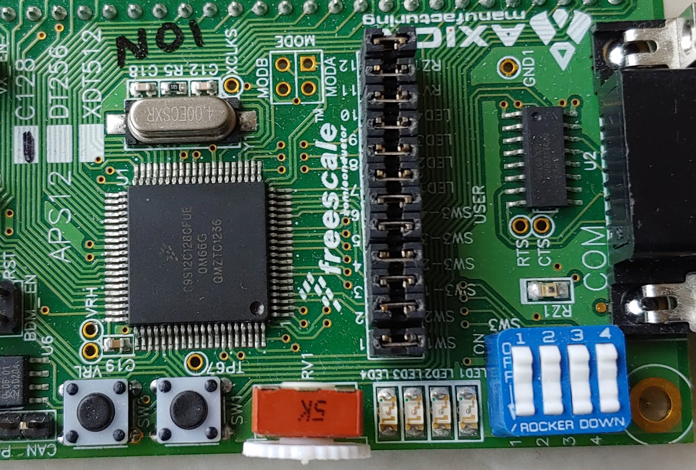
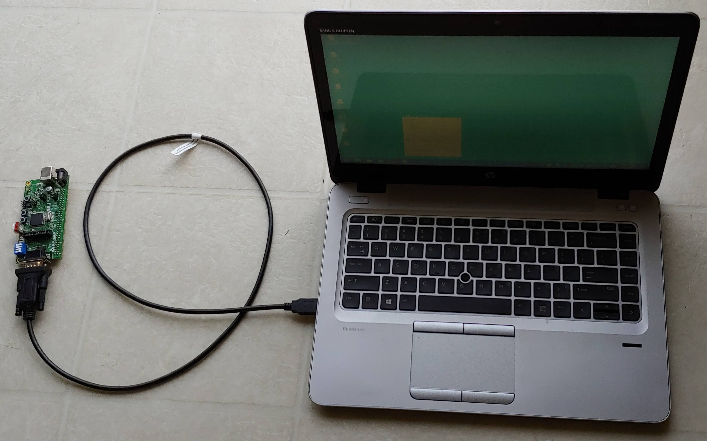

Homework 2
Due: Feb. 3, 2021 11:30pm
Objective
Learn simple HC12 assembly program for the parallel port I/O, subroutine, looping, and
timing.


Instruction
- Read the textbook Chapter 1, Chapter 2, Chapter 3, and Chapter 4.
Note, you do NOT need to understand all of them at this time.
- Review: Be sure to do the HW1 if you have not done it yet.
You should be familiar with the assembly programming process from
the HW1. That is,
(0) Install the Freescale CodeWarrior IDE,
(1) start the Freescale CodeWarrior IDE,
(2) do 'New Project' named CMPEN472hw1,
(3) type in the source code,
(4) click the 'Make' icon to assemble and generate the .s19 executable file,
(5) click the 'Debug' icon to start the Full Chip Simulation,
(6) add/remove simulation window components, and
(7) verify correct program functioning or do debug the program.
- Task: Create HW2 (named as CMPEN472hw2_lastname) in CodeWarrior,
type in the sample program text from
hw2prg.pdf file. Do make the main.asm file
and generate the .s19 executable file.
- Once the program has been assembled without error, Start the
Full Chip Simulation Debug.
- Add COMPONENTS: Component Window called VisualizationTool to the Full_Chip_
Simulation. By right clicking on the VisualizationTool, one may set the
Properties or Add New Instrument. Set the VisualizationTool Properties first.
Set Refresh Mode to CPU Cycles
Set Cycle Refresh Count to 1
- Then on the VisualizationTool window, add one LED (Add New Instrument option).
Now right click on the LED, then edit Properties,
Set Port to Display to 0x0001
Set Size 1 Byte
Set Byte Order to Big Endian
Set Bit Number to Display to 7
This is the LED 4.
- Then on the VisualizationTool window, add three more LEDs.
Right click on the LEDs, then edit Properties, same way as before.
For LED 3, Set Bit Number to Display to 6.
For LED 2, Set Bit Number to Display to 5.
For LED 1, Set Bit Number to Display to 4.
- Then on the VisualizationTool window, add one DIL Switch (Add New Instrument option).
Now right click on the DIL Switch, then edit Properties,
Set Port to Display to 0x0001
We will use PORTB bit 0, 1, 2, and 3 as switch 1, 2, 3, and 4 of the DIL Switch.
- Finally on the VisualizationTool window, set the mode from EDIT to DISPLAY mode.
- Run or single step your program. Be sure to check that the
Program Counter PC is set to $3100
on your simulator upon start.
- When you are running the program, see the effects on the LED 4 at
PORTB bit 7 - blinking.
The speed of the LED 4 at bit 7 blinking can be changed. It may be too slow
or it may be too fast (depends on your Windows 10 computer performance).
- Try changing the delay values and observe the LED blinking speed.
- The DIL Switch bit 0 is the SW1 (Switch 1) on the CSM-12C128 board.
Press SW1 and see the LED light, observe the LED blinking.
- Please understand the program.
- For the Homework 2 to turn in, MODIFY the program including the comments.
Have your program blink LED 1 and LED 4 alternately. The LED 1 is on PORTB bit 4
and LED 4 is on PORTB bit 7.
- In another words, the 'blink LED 1 and LED 4 alternatively' mean that
both lights should blink at the same time - while 1 is ON and 4 is OFF
for 1 second and then 1 is OFF and 4 is ON for next 1 second, and repeat.
- Also what is SW1 used for? Well, if sw1 is NOT pressed, do the
alternat blinking above. If sw1 is pressed, do something different than
the alternate blinking above. For example, blink all 4 LEDs in sequence:
LED 4 ON and others OFF, LED 3 ON and others OFF,
LED 2 ON and others OFF, LED 1 ON and others OFF, and repeat.
There are many other possibility with the four LEDs.
- Again assemble, simulate, and run your program on the Full Chip Simulator.
- Be sure to correct all the errors and be sure to update the
comments (put your name, etc.). Comments are very
important in assembly language programs.
- You may want to see and check the
Sample Grading Sheet for this homework.
-
Copy your 'main.asm' file to 'cmpen472hw2_YourLastName.asm'.
For example, mine will be 'cmpen472hw2_choi.asm' (Do not ZIP your
'cmpen472hw2_YourLastName.asm' file.)
-
Turn-in your project source code file through
Penn State CANVAS.
Upload your source code file into the CANVAS Assignment's Homework submission.
Be sure to select CMPEN 472 class and correct Homework number,
and correct file name.
Congratulations on your second CMPEN 472 homework completion!
Debugging Aid
- You may use debugger if your program is not working - you need to debug.
- If you set the delay time on the program as minimum (that is 2 or 1),
then you can do single step through the program to check the LED light ON and OFF.
Again when you change the program source file, you need to re- Make the
main.asm file and restart the debugger.
- Also, the CodeWarrior debugger allows user to set a breakpoint
in the program. One can set the breakpoint after each 1 second delay loop
and resume with single step to check the proper program operations.
- Any line in the program displayed in the debugger can be double clicked
to place a breakpoint. Another double click on the line with breakpoint
will remove the breakpoint.
Epilogue:
Flow chart of the Homework 2 program.
Click here.
Aid for the Homework 2.
Click here.